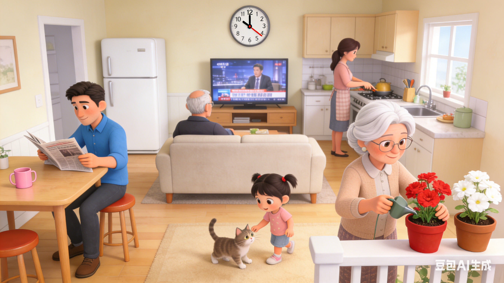

In this warm family scene, it's 10:00 in the morning. Dad is sitting comfortably, reading a newspaper. Grandpa is relaxing on the couch, watching TV. Grandma, with her white hair, is gently watering the two flower pots - one with red flowers and the other with white ones. The little girl is having fun playing with the family cat. Mom is busy in the kitchen, preparing a delicious meal. On the pink table, there's a pink cup waiting to be used. Everyone is enjoying their peaceful morning together, creating a happy and harmonious atmosphere.